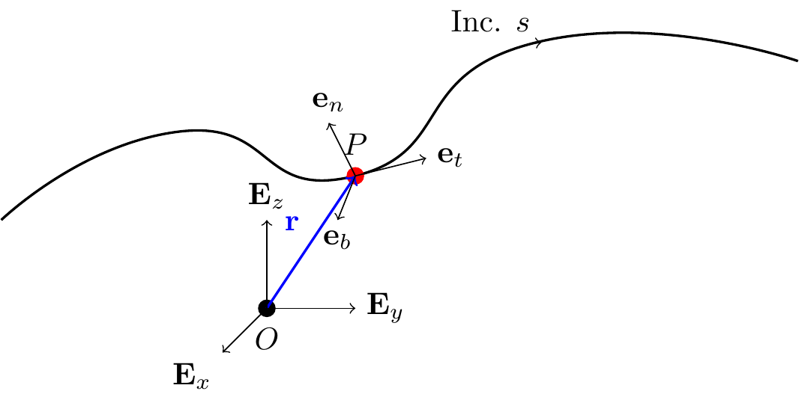
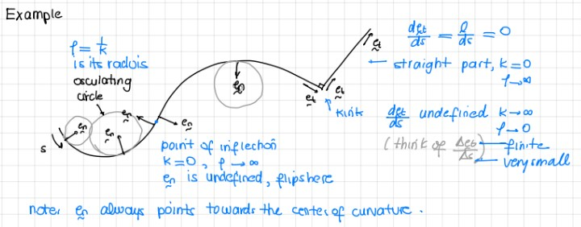
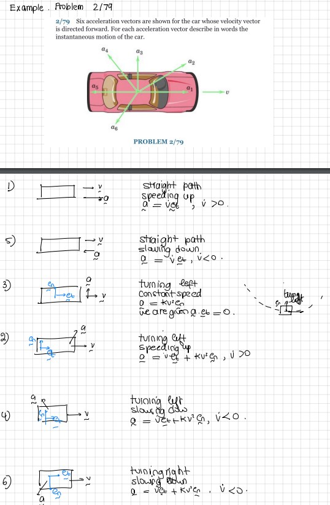
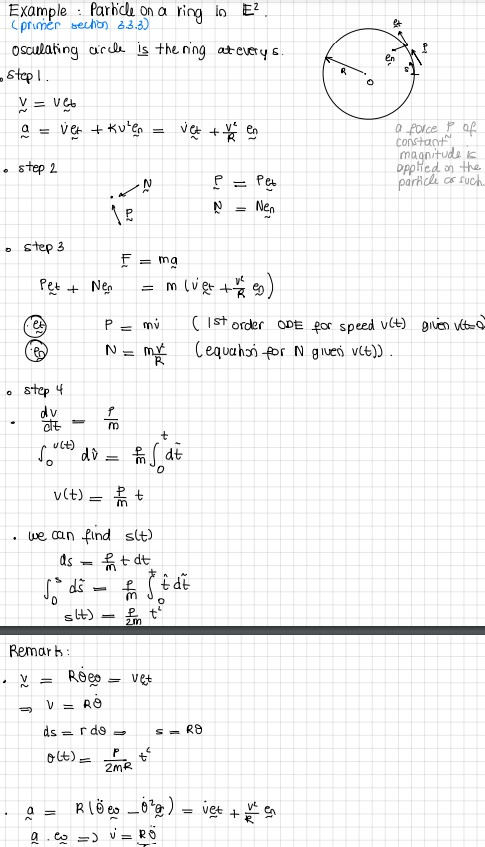

12 The Serret-Frenet Basis
In general, the path of a particle is a curve in space — we refer to such curves as space curves.
Consider a fixed curve \(\mathcal{C}\) embedded in \(\mathbb{E}^3\). Let the position vector of a point \(P\in\mathcal{C}\) be \({\bf r}\). In Cartesian coordinates, \({\bf r} = x{\bf E}_x+y{\bf E}_y+z{\bf E}_z\).
Recall the arc-length parameter \(s\) associated with \(\mathcal{C}\): \[\begin{align*} \lp\frac{ds}{dt}\rp^2 = \frac{d{\bf r}}{dt}\cdot\frac{d{\bf r}}{dt}. \end{align*}\] This parameter uniquely identifies a point \(P\) on \(\mathcal{C}\), giving the representation \({\bf r} = \hat{\bf r}(s)\).
12.1 The Serret-Frenet Triad
The Serret-Frenet basis \(\{{\bf e}_t,{\bf e}_n,{\bf e}_b\}\) is defined at the point \(P\); it depends on the curve and the particle’s location on it.
TipThink!
Question: How do we define the unit tangent vector?
NoteAnswer
…
Recall the unit tangent vector: \[\begin{align} {\bf e}_t = \hat{\bf e}_t(s) = \frac{d{\bf r}}{ds} = \lim_{\Delta s\rightarrow 0}\frac{\hat{\bf r}(s+\Delta s)-\hat{\bf r}(s)}{\Delta s}. \end{align}\]
TipThink!
Question: What do we know about \(\frac{d\hat{\bf e}_t}{ds}\)?
NoteAnswer
We can show that \({\bf e}_t\) and \(\frac{d\hat{\bf e}_t}{ds}\) are perpendicular by differentiating \({\bf e}_t\cdot{\bf e}_t = 1\): \[\begin{align} {\bf e}_t\cdot\frac{d{\bf e}_t}{ds} = 0. \end{align}\]
ImportantNote! Derivatives of a unit vector
It is a common mistake to assume that the derivative of a unit vector is necessarily a unit vector. Recall: \(\dot{\bf e}_r = \dot{\theta}{\bf e}_\theta\) is not generally a unit vector.
Hence, we define: \[\begin{align} \kappa{\bf e}_n = \frac{d{\bf e}_t}{ds}, \end{align}\] where \(\kappa = \lnorm \frac{d{\bf e}_t}{ds}\rnorm \geq 0\) and \(\lnorm{\bf e}_n\rnorm=1\).
- \({\bf e}_n\) is the unit principal normal vector.
- \(\kappa\) is the curvature of \(\mathcal{C}\) at \(P\).
- The radius of curvature is \(\rho = 1/\kappa\).
For any point on a curve, three nearby non-collinear points define the osculating circle (radius \(\rho\), center of curvature).

TipThink!
Question: When is \({\bf e}_n\) not uniquely defined?
NoteAnswer
When \(d{\bf e}_t/ds = {\bf 0}\) (i.e. \(\kappa = 0\)), such as on a straight line, at an inflection point, or at a corner. In this case, \({\bf e}_n\) is defined as any unit vector perpendicular to \({\bf e}_t\).
The unit binormal vector: \[\begin{align*} {\bf e}_b = {\bf e}_t\times{\bf e}_n. \end{align*}\]
Concluding remarks:
- \(\{{\bf e}_t,{\bf e}_n,{\bf e}_b\}\) is orthonormal and right-handed.
- The osculating plane is spanned by \({\bf e}_t\) and \({\bf e}_n\); it contains the osculating circle.
- The rectifying plane is spanned by \({\bf e}_t\) and \({\bf e}_b\).
- The normal plane is spanned by \({\bf e}_n\) and \({\bf e}_b\).
Check out this animation showing the osculating circle, and this video placing the Serret-Frenet basis on a bobsled.
12.2 Kinematics
Position, velocity, and acceleration in the Serret-Frenet basis: \[\begin{align*} {\bf v} &= \frac{ds}{dt}{\bf e}_t = v{\bf e}_t,\\ {\bf a} &= \dot{v}{\bf e}_t+\kappa v^2{\bf e}_n. \end{align*}\]
12.2.1 Example: Problem 02/279
Draw the Serret-Frenet basis. Indicate whether the car is accelerating or decelerating and its direction of motion.
12.3 Kinetics
\[\begin{align} {\bf F} &= m{\bf a}\\ F_t{\bf e}_t+F_n{\bf e}_n+F_b{\bf e}_b &= m\lp\dot{v}{\bf e}_t+\kappa v^2{\bf e}_n\rp. \end{align}\] Note that forces in the binormal direction should always balance.
12.3.1 Example: Problem 03/040 and Roller Coaster Design
TipThink!
Question: Consider the design of a roller coaster that is a circular ring. Comment on its safety.
NoteAnswer
At the transition between the circular and straight portions, there is a jump in curvature, hence a jump in acceleration, hence a jump in the normal force — producing a jerk. For a circular loop, the normal force goes from 0 to a finite value instantaneously. This could snap the rider’s neck. Instead, we use two connected clothoids (Euler spirals), whose curvature is proportional to arc length.
12.4 The Serret-Frenet Formulae
We want the derivatives of the Serret-Frenet basis vectors with respect to \(s\).
We already have: \[\begin{align} \frac{d{\bf e}_t}{ds} = \kappa{\bf e}_n. \end{align}\]
Since \({\bf e}_b\cdot{\bf e}_b = 1\), we have \(\frac{d{\bf e}_b}{ds}\cdot{\bf e}_b = 0\). Also from \({\bf e}_t\cdot{\bf e}_b = 0\), we get \(\frac{d{\bf e}_b}{ds}\cdot{\bf e}_t=0\). So \(\frac{d{\bf e}_b}{ds}\) is parallel to \({\bf e}_n\): \[\begin{align} \frac{d{\bf e}_b}{ds} = -\tau{\bf e}_n, \end{align}\] where \(\tau\) is the torsion of \(\mathcal{C}\) at \(P\).
Then: \[\begin{align} \frac{d{\bf e}_n}{ds} = -\kappa{\bf e}_t+\tau{\bf e}_b. \end{align}\]
In summary (the Serret-Frenet formulae): \[\begin{align} \begin{bmatrix} \frac{d{\bf e}_t}{ds}\\ \frac{d{\bf e}_n}{ds}\\ \frac{d{\bf e}_b}{ds} \end{bmatrix} = \begin{bmatrix} 0 & \kappa & 0\\ -\kappa & 0 & \tau\\ 0 & -\tau & 0 \end{bmatrix} \begin{bmatrix} {\bf e}_t\\ {\bf e}_n\\ {\bf e}_b \end{bmatrix}. \end{align}\]
Define the Darboux vector \(\bomega_{SF} = \kappa{\bf e}_b+\tau{\bf e}_t\) so that: \[\begin{align} \frac{d{\bf e}_i}{ds} = \bomega_{SF}\times{\bf e}_i, \quad i = t, n, b. \end{align}\]
12.4.1 Example: A Particle on a Helix
For a helix \(x=R\cos(\theta)\), \(y=R\sin(\theta)\), \(z=\alpha R\theta\): \[\begin{align} \kappa = \frac{1}{R(1+\alpha^2)}, \qquad \tau = \frac{\alpha}{(1+\alpha^2)R}. \end{align}\]
12.5 The Curvature Formula for a Plane Curve
For a plane curve \(y = f(x)\), \(z = z_0\): \[\begin{align} \kappa = \kappa(x) = \frac{\left|\frac{d^2 f}{dx^2}\right|}{\lp\sqrt{1+\lp\frac{df}{dx}\rp^2}\rp^3}. \end{align}\]
12.6 Alternative Notation for Plane Curves
This section is not usually covered.
For plane curves, some texts define the angle \(\beta = \beta(s)\) such that: \[\begin{align} {\bf e}_t = \cos(\beta){\bf E}_x+\sin(\beta){\bf E}_y, \qquad \bar{\bf e}_n = \cos(\beta){\bf E}_y-\sin(\beta){\bf E}_x. \end{align}\] Then \(\kappa = \left|\frac{d\beta}{ds}\right|\) and \(\frac{d\beta}{ds}\) is the rate of rotation of the triad about \({\bf E}_z\).
12.7 Summary
Serret–Frenet basis \(\{\mathbf{e}_t,\mathbf{e}_n,\mathbf{e}_b\}\): \[\begin{align} \mathbf{v} &= v\,\mathbf{e}_t, \qquad \mathbf{a} = \dot v\,\mathbf{e}_t + \kappa v^2\,\mathbf{e}_n, \qquad \mathbf{e}_b = \mathbf{e}_t\times\mathbf{e}_n. \end{align}\] The curvature is \(\kappa=1/\rho\) (radius of curvature \(\rho\)). The BoLM gives \(F_t = m\dot v\) and \(F_n = m\kappa v^2\).
12.8 Lecture Videos
12.9 Exercises
The following problems are from Set 07 – The Serret–Frenet Basis.
1. [MKB 2/079] Analyse the acceleration vector in the Serret–Frenet basis.

2. [MKB 02-090] Note that \(\dot v \neq \|\mathbf{a}\|\); acceleration has both tangential and normal components. (ans. \(v = 20\) m/s)
3. [MKB 02-091] (ans. \(\rho = 1709\) m)
4. [02-097] Follow the 4 steps; express \(\mathbf{e}_t\) and \(\mathbf{e}_n\) in the Cartesian basis. (ans. at \(t=1\) s: \(\dot v=-6.58\) ft/s\(^2\), \(\rho=142.2\) ft; at \(t=2\) s: \(\dot v=8.75\) ft/s\(^2\), \(\rho=149.7\) ft)
5. [02-103] (ans. \((x_C,y_C)=(22.5,-22.9)\) m)
6. [02-199] Draw \(\mathbf{e}_t\) and \(\mathbf{e}_n\) first. (ans. \(\dot r=15\) m/s, \(\dot\theta=0.325\) rad/s, \(\rho=129.9\) m)
7. [03-040] Note the jump in normal force at the transition from straight to curved path. (ans. (a) \(R=1.177\) N; (b) \(R=1.664\) N)
8. [03-041] What does “weightless” mean? (ans. \(\rho=24\,000\) ft)
9. [03-043] Draw the Serret–Frenet basis carefully; the figure hints at the direction of \(\mathbf{e}_n\). (ans. \(v=29.1\) m/s, \(N=12.36\) kN)

10. [OOR 3.1] (See O’Reilly Primer.)
11. [OOR 3.2]